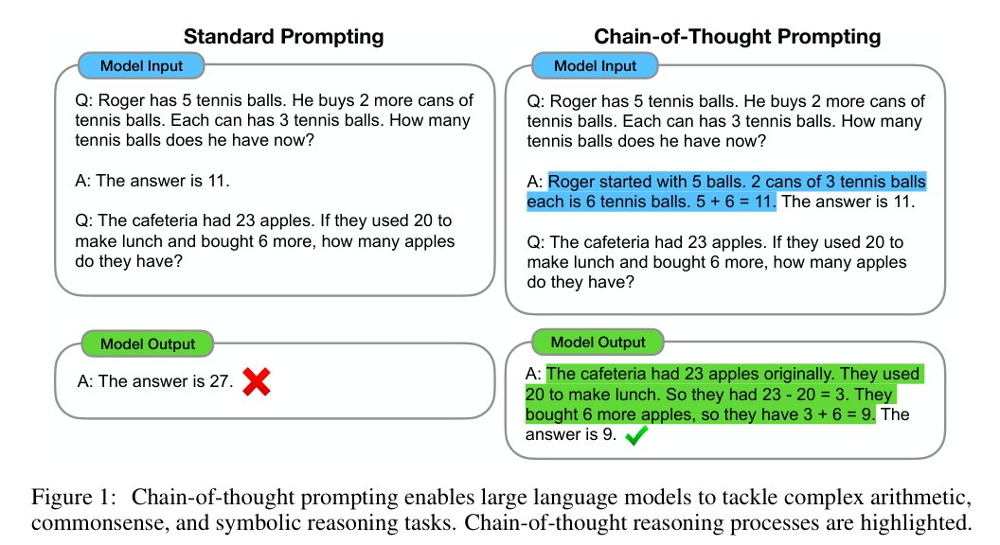
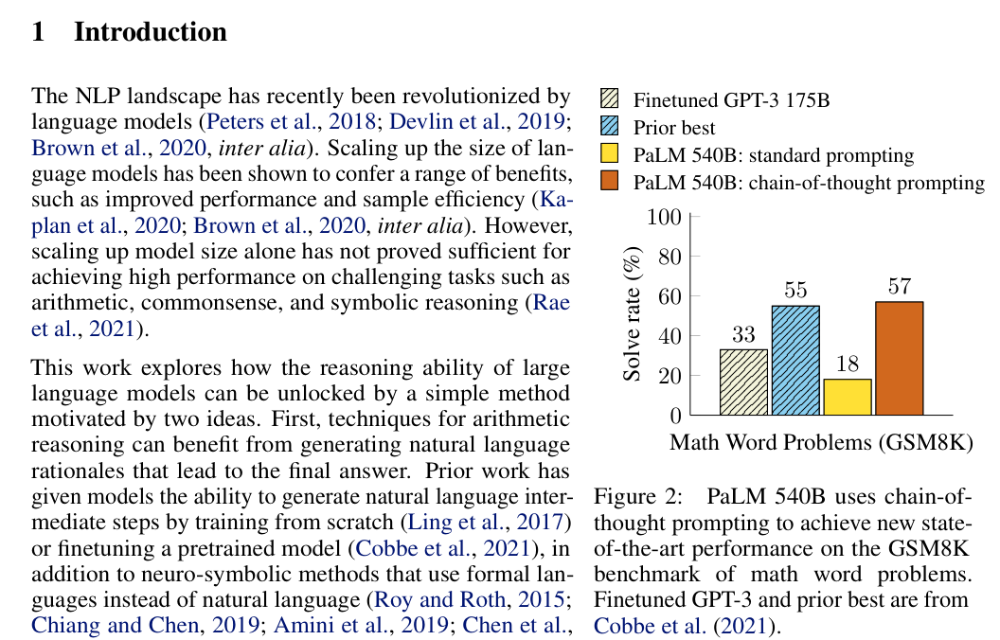
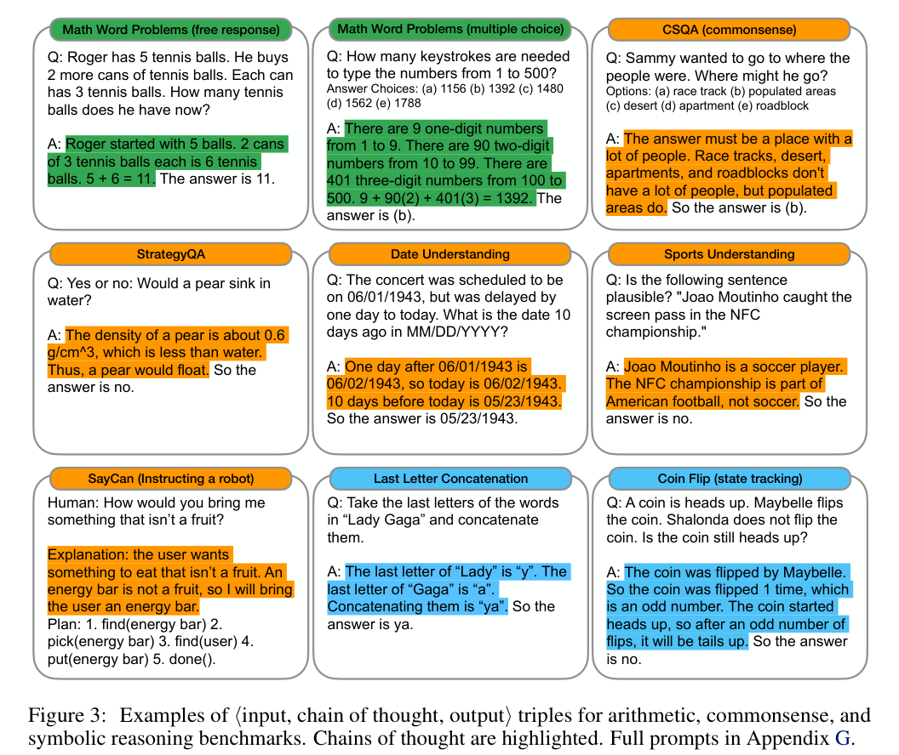
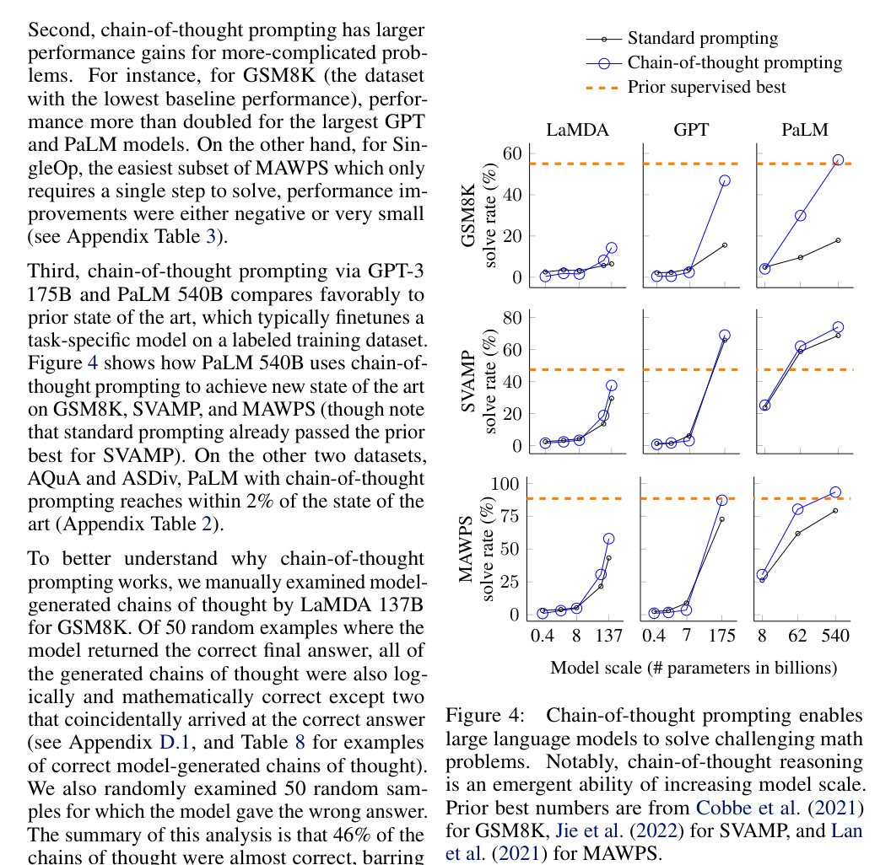
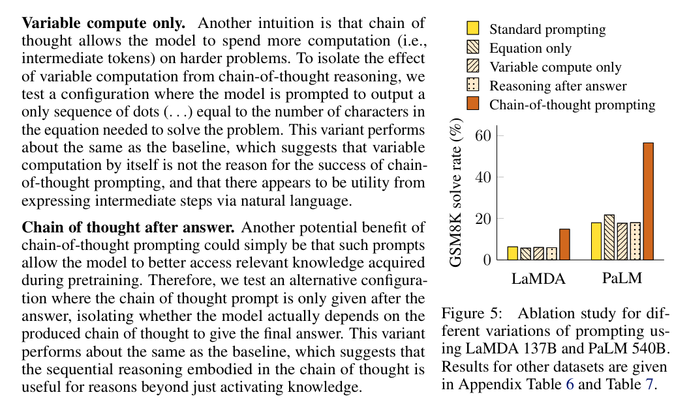
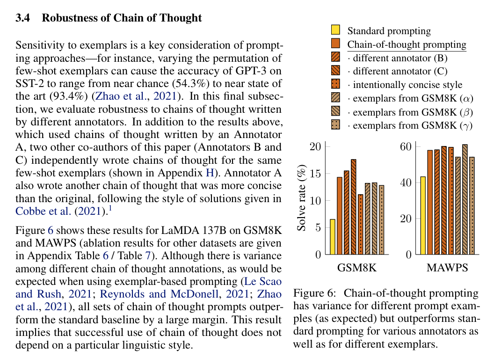
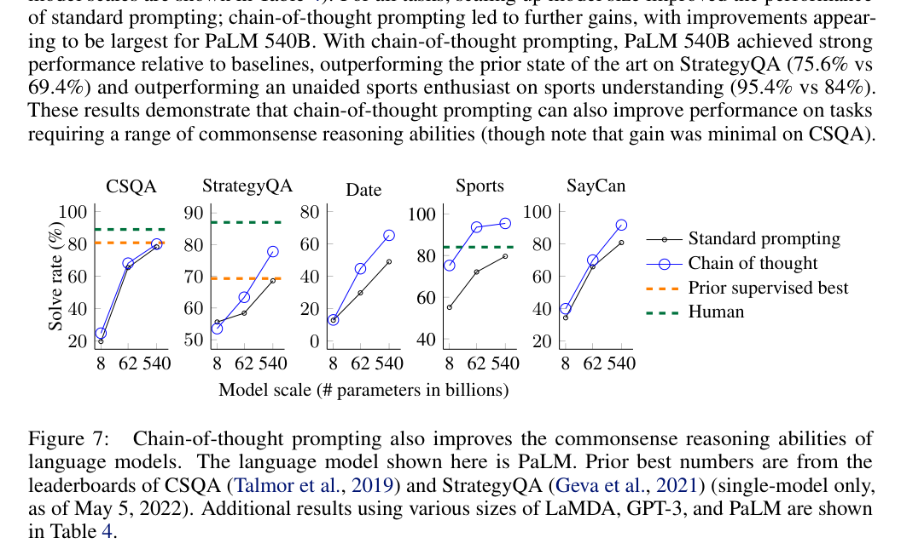
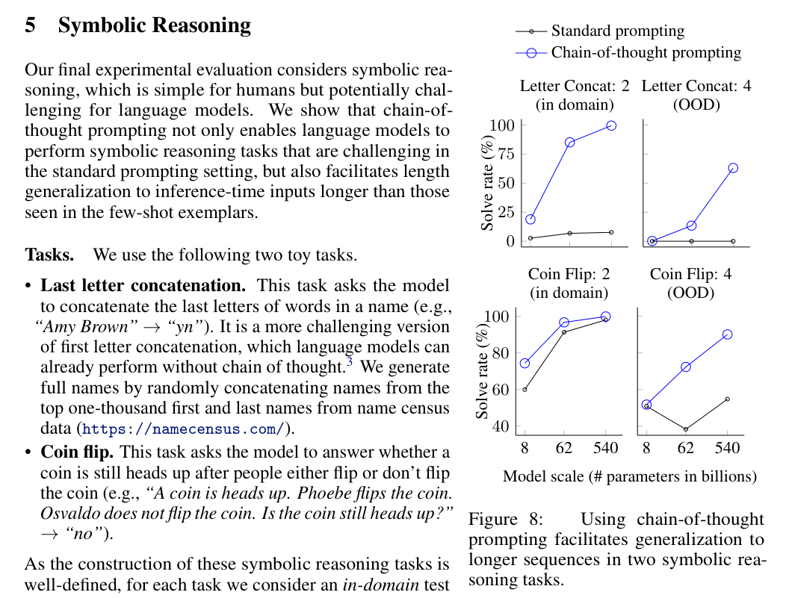

생각의 사슬 프롬프팅이 대규모 언어 모델의 추론을 유도한다
본 논문에서는 '생각의 사슬(chain of thought)', 즉 최종 정답에 도달하기까지의 일련의 중간 추론 단계를 생성하는 방식이 대규모 언어 모델(LLM)의 복잡한 추론 수행 능력을 유의미하게 향상시킬 수 있음을 탐구한다. 특히, 소수의 '생각의 사슬' 예시가 퓨샷 프롬프팅(few-shot prompting)에 제공될 때 충분히 큰 언어 모델에서 이러한 추론 능력이 자연스럽게 발현(emergent property)된다는 사실을 밝혀낸다.
산술(arithmetic), 상식(commonsense), 심볼릭(symbolic) 추론 벤치마크에 대한 실증적 평가 결과, 생각의 사슬 프롬프팅(Chain-of-Thought Prompting, CoT)은 표준 프롬프팅(standard prompting)에 비해 현저한 성능 향상을 이끌어냈다. 예를 들어, 540B 파라미터를 가진 PaLM 모델에 단 8개의 생각의 사슬 예시만을 프롬프트로 제공했을 때, 수학 서술형 문제 벤치마크인 GSM8K에서 56.9%의 정확도를 기록하며 최신 최고 성능(SOTA, 당시 파인튜닝된 GPT-3 모델 포함)을 경신하였다.

1. 서론 (Introduction)
최근 자연어 처리(NLP) 분야는 언어 모델의 규모를 키우는 스케일링(scaling)을 통해 번역, 요약, 질의응답 등 다양한 작업에서 눈부신 성능 향상을 달성해왔다. 그러나 단순히 모델 크기를 늘리는 것만으로는 산술 연산, 상식 추론, 기호 조작과 같은 다단계 추론(multi-step reasoning) 문제에서 여전히 취약한 모습을 보여주었다.
인간은 복잡한 문제(예: 여러 단계의 계산이 필요한 수학 문장제)를 풀 때 곧바로 최종 답을 내놓지 않는다. 대신 문제를 여러 하위 문제로 분해하고, 중간 사고 과정을 머릿속에 떠올리거나 종이에 적어가며 차근차근 해결한다.
우리는 대규모 언어 모델에서도 이와 유사한 능력을 이끌어낼 수 있는지 질문을 던진다. 본 연구에서는 생각의 사슬(Chain-of-Thought, CoT) 프롬프팅이라는 지극히 단순하면서도 강력한 기법을 제안한다. 이는 언어 모델에 몇 개의 예시(Few-shot exemplars)를 제공할 때 단순히 ⟨입력, 정답⟩ 쌍만 주는 것이 아니라, ⟨입력, 생각의 사슬, 정답⟩의 형태로 중간 추론 과정을 명시해 주는 방법이다.
2. 생각의 사슬 프롬프팅 (Chain-of-Thought Prompting)
생각의 사슬은 문제 해결을 위한 일련의 중간 자연어 추론 단계를 의미한다. 이 접근법은 다음과 같은 몇 가지 매력적인 특성을 지닌다:

3. 산술 추론 (Arithmetic Reasoning)
언어 모델이 가장 취약하다고 알려진 수학 문장제 문제(Math Word Problems)를 대상으로 평가를 수행하였다.
3.1 실험 설정
다음 5개 벤치마크 데이터셋을 평가에 사용하였다:
- GSM8K: 초등학교 수준의 다단계 수학 문장제 데이터셋 (가장 대표적인 벤치마크)
- SVAMP: 어휘적 함정과 가변성이 추가된 수학 문제셋
- ASDiv: 다양한 언어적 패턴의 산술 문제 모음
- AQuA: 객관식 대수학 및 확률 추론 문제셋
- MAWPS: 단순 사칙연산 중심의 문장제 문제셋

3.2 주요 결과 (Results)
주요 실험 결과는 Figure 4에 요약되어 있다. 여기서 세 가지 결정적인 관찰이 도출된다:

- 창발적 능력 (Emergent Ability): 모델 크기가 작은 경우(예: 10B 이하)에는 CoT가 거의 효과가 없거나 오히려 엉뚱한 추론을 생성하여 정확도가 떨어지기도 한다. 그러나 모델 파라미터가 약 1,000억(100B) 이상으로 커지면 급격한 성능 상승이 나타난다.
- 복잡한 문제일수록 더 큰 성능 향상: 단순 단단계 문제(MAWPS)보다 다단계 추론이 필수적인 GSM8K에서 CoT의 효과가 압도적으로 크다(PaLM 540B 기준: 표준 프롬프팅 17.9% → CoT 56.9%로 3배 이상 폭증).
- 기존 파인튜닝 SOTA 능가: PaLM 540B에 CoT를 결합했을 때, 대규모 훈련 데이터로 직접 지도학습된 특화 모델들의 최고 기록을 뛰어넘었다.
3.3 어블레이션 연구 (Ablation Study)
CoT의 성능 향상이 단순히 '더 많은 토큰'을 출력해서인지, 아니면 '자연어 추론 과정' 덕분인지를 검증하기 위해 다음과 같은 변형을 비교하였다:

- 수식 전용(Equation only): 자연어 설명 없이 중간 연산식만 출력하게 함 → 성능이 크게 떨어짐. 자연어 맥락이 복잡한 하위 계산을 계획하는 데 필수적임.
- 계산 전용(Computation only): 토큰 수만 맞추고 무의미한 연산 기호를 나열 → 아무런 향상 없음.
- 답변 후 추론(Reasoning after answer): 정답을 먼저 출력하고 뒤에 설명을 붙이게 함 → 표준 프롬프팅과 비슷한 수준에 머무름. 이는 모델이 답을 내기 '전에' 추론 토큰을 먼저 생성하는 것이 인과적 어텐션(causal attention) 메커니즘에서 필수적임을 증명함.
3.4 프롬프트 작성자 및 예시에 대한 강건성

4. 상식 추론 (Commonsense Reasoning)
CoT는 수학 계산뿐만 아니라 인간의 일상 상식과 암묵적 지식이 필요한 추론 과제에서도 뛰어난 성능을 나타낸다. CSQA(CommonsenseQA), StrategyQA, Date Understanding, Sports Understanding, SayCan 등의 과제에서 평가를 진행하였다.

5. 심볼릭 추론 (Symbolic Reasoning)
기호 조작 및 논리 규칙 적용 능력을 검증하기 위해 두 가지 과제를 설계하였다:
- 동전 뒤집기 (Coin Flip): 동전이 처음에 앞면일 때, 일련의 뒤집기/그대로 두기 행동 후 최종 면을 맞추는 과제.
- 마지막 글자 이어붙이기 (Last Letter Concatenation): 단어 목록이 주어졌을 때 각 단어의 마지막 알파벳들을 순서대로 결합하는 과제 (예: "John Lennon" → "nn").

6. 고찰 및 한계점 (Discussion & Limitations)
- 초대형 모델에 대한 의존성: 모델 크기가 100B 미만일 경우 CoT는 종종 환각(hallucination)이나 논리적 비약이 섞인 잘못된 사슬을 생성한다.
- 사실 왜곡 및 환각 (Hallucination): 언어 모델이 추론 사슬 안에서 사실과 다른 전제를 생성하거나 중간 단계에서 그럴듯한 거짓말을 만들어낼 위험이 상존한다.
- 추론 비용 증가: 중간 추론 토큰을 수십~수백 개 생성해야 하므로 계산 비용과 응답 지연(latency)이 증가한다.
7. 관련 연구 (Related Work)
본 연구는 다단계 추론을 유도하는 스크래치패드(Scratchpad) 기법, 수식 및 프로그램 생성 기반 추론, 그리고 퓨샷 인컨텍스트 학습(In-Context Few-Shot Learning) 연구들과 긴밀하게 연결되어 있다. 본 연구의 차별점은 별도의 파인튜닝 없이 사전학습된 언어 모델의 본래 능력만으로 자연어 생각의 사슬을 유도해냈다는 점이다.
8. 결론 (Conclusions)
생각의 사슬 프롬프팅은 대규모 언어 모델이 다단계 추론을 수행하도록 이끄는 극히 직관적이면서도 강력한 메커니즘이다. 산술, 상식, 기호 추론 전반에서 현저한 성능 향상을 입증하였으며, 오늘날 AI Agent(ReAct, Reflexion, Tree of Thoughts 등)의 모든 추론적 기틀을 다진 기념비적 연구이다.